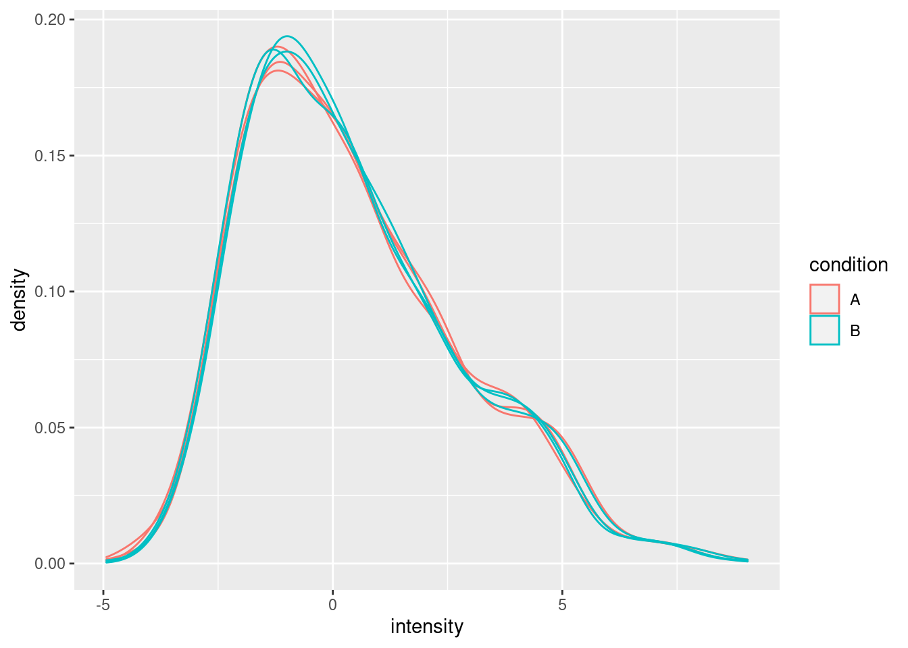
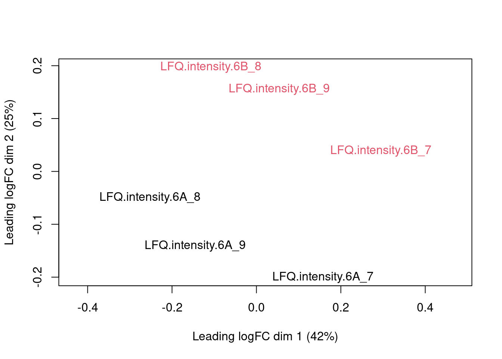
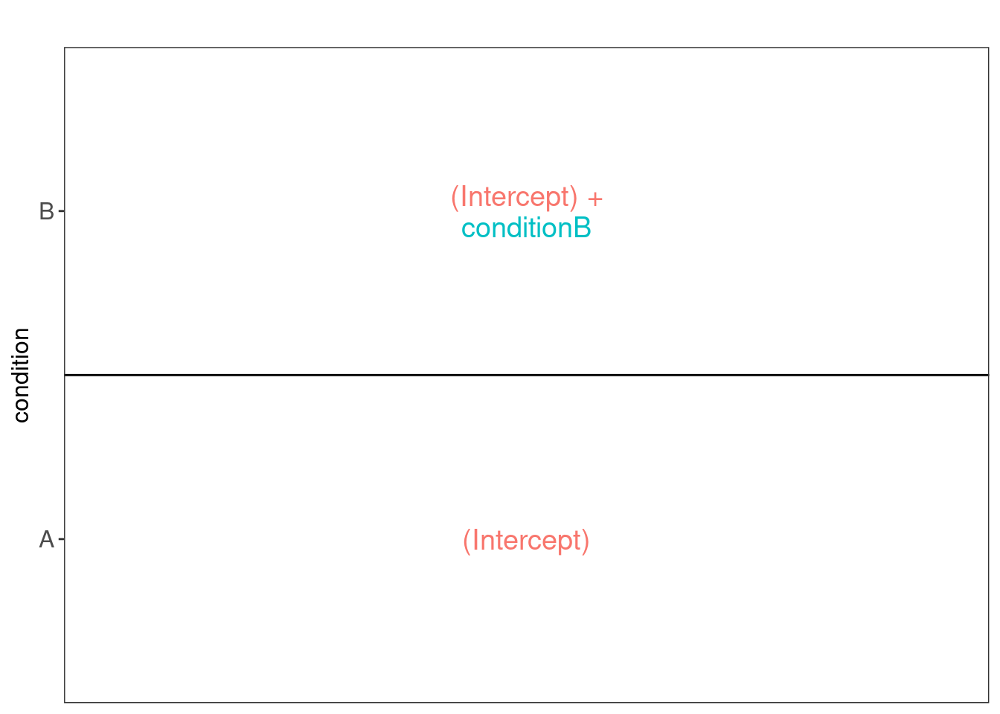
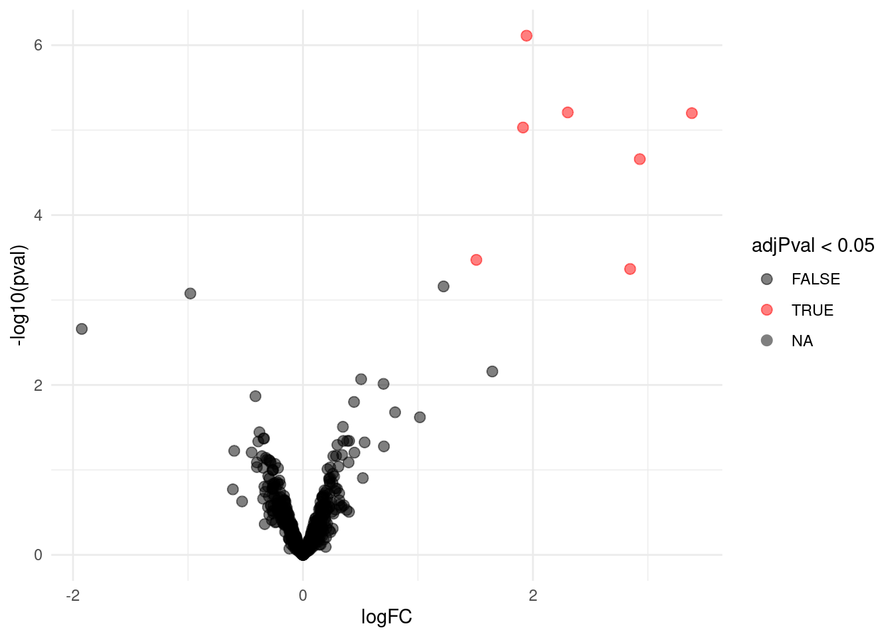
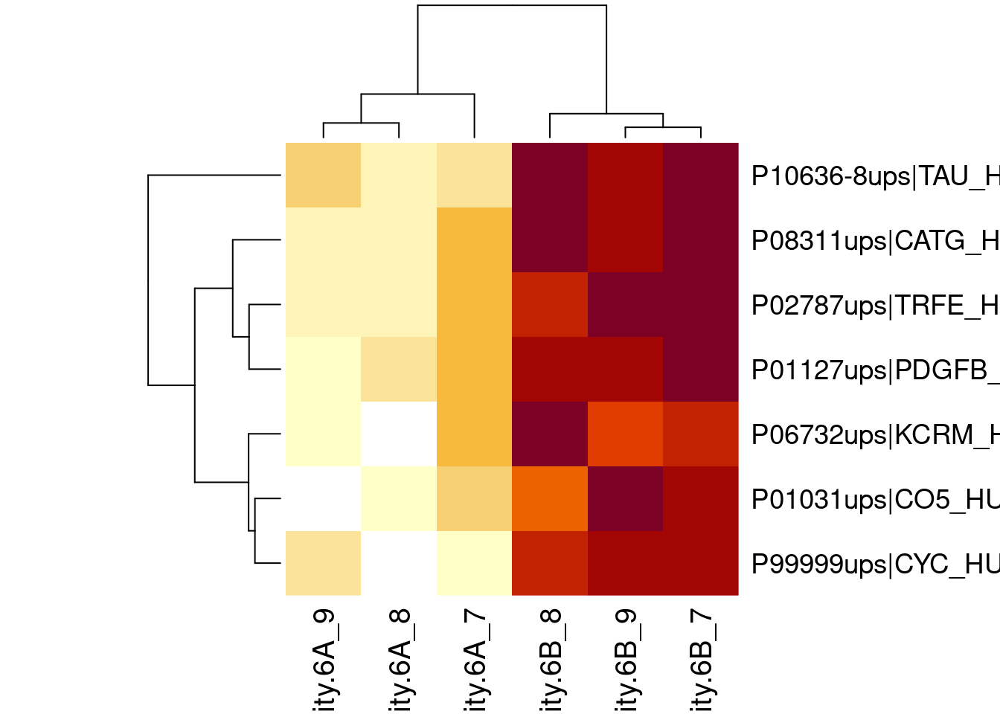
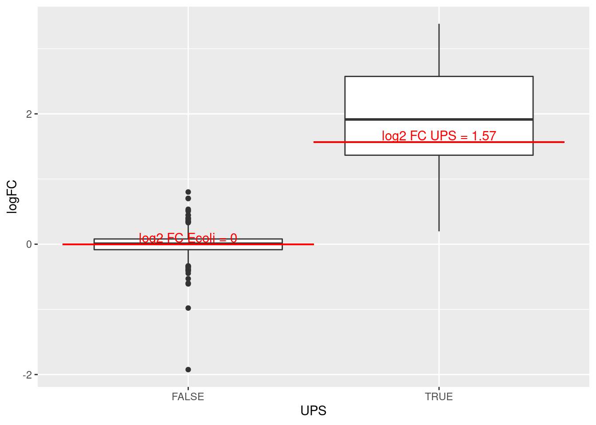

Introduction to proteomics data analysis: maxLFQ summarization
Lieven Clement
statOmics, Ghent University (https://statomics.github.io)

This is part of the online course Proteomics Data Analysis (PDA)
1 Background
This case-study is a subset of the data of the 6th study of the Clinical Proteomic Technology Assessment for Cancer (CPTAC). In this experiment, the authors spiked the Sigma Universal Protein Standard mixture 1 (UPS1) containing 48 different human proteins in a protein background of 60 ng/\(\mu\)L Saccharomyces cerevisiae strain BY4741. Two different spike-in concentrations were used: 6A (0.25 fmol UPS1 proteins/\(\mu\)L) and 6B (0.74 fmol UPS1 proteins/\(\mu\)L) [5]. We limited ourselves to the data of LTQ-Orbitrap W at site 56. The data were searched with MaxQuant version 1.5.2.8, and detailed search settings were described in Goeminne et al. (2016) [1]. Three replicates are available for each concentration.
- NOTE THAT maxLFQ SUMMARISATION IS SUBOPTIMAL!
- THIS IS FOR DIDACTICAL PURPOSES ONLY.
2 Data
We first import the data from proteinGroups.txt file. This is the file containing maxLFQ summarized protein-level intensities. For a MaxQuant search [6], this proteinGroups.txt file can be found by default in the “path_to_raw_files/combined/txt/” folder from the MaxQuant output, with “path_to_raw_files” the folder where the raw files were saved. In this vignette, we use a MaxQuant proteinRaws file which is a subset of the cptac study. To import the data we use the QFeatures package.
We generate the object proteinRawFile with the path to the proteinGroups.txt file. Using the grepEcols function, we find the columns that contain the LFQ expression data of the proteinRaws in the proteinGroups.txt file.
library(tidyverse)
library(limma)
library(QFeatures)
library(msqrob2)
library(plotly)
library(gridExtra)
proteinsFile <- "https://raw.githubusercontent.com/statOmics/PDA/data/quantification/cptacAvsB_lab3/proteinGroups.txt"
ecols <- grep("LFQ\\.intensity\\.", names(read.delim(proteinsFile)))
pe <- readQFeatures(
table = proteinsFile, fnames = 1, ecol = ecols,
name = "proteinRaw", sep = "\t"
)In the following code chunk, we can extract the spikein condition from the raw file name.
cond <- which(
strsplit(colnames(pe)[[1]][1], split = "")[[1]] == "A") # find where condition is stored
colData(pe)$condition <- substr(colnames(pe), cond, cond) %>%
unlist %>%
as.factorWe calculate how many non zero intensities we have per protein and this will be useful for filtering.
rowData(pe[["proteinRaw"]])$nNonZero <- rowSums(assay(pe[["proteinRaw"]]) > 0)Proteins with zero intensities are missing and should be represent with a NA value rather than 0.
pe <- zeroIsNA(pe, "proteinRaw") # convert 0 to NA2.1 Data exploration
45% of all peptide intensities are missing and for some proteins we do not even measure a signal in any sample.
3 Preprocessing
This section preforms preprocessing for the peptide data. This include
- log transformation,
- filtering
3.1 Log transform the data
pe <- logTransform(pe, base = 2, i = "proteinRaw", name = "proteinLog")3.2 Filtering
- Remove reverse sequences (decoys) and contaminants
We now remove the contaminants and proteins that map to decoys.
pe[["proteinLog"]] <- pe[["proteinLog"]][rowData(pe[["proteinLog"]])$Reverse != "+", ]
pe[["proteinLog"]] <- pe[["proteinLog"]][rowData(pe[["proteinLog"]])$
Potential.contaminant != "+", ]We keep 1537 peptides upon filtering.
3.3 Normalize the data using median centering
We normalize the data by substracting the sample median from every intensity for peptide \(p\) in a sample \(i\):
\[y_{ip}^\text{norm} = y_{ip} - \hat\mu_i\]
with \(\hat\mu_i\) the median intensity over all observed peptides in sample \(i\).
pe <- normalize(pe,
i = "proteinLog",
name = "protein",
method = "center.median")3.4 Explore normalized data
Upon the normalisation the density curves are nicely registered
pe[["protein"]] %>%
assay %>%
as.data.frame() %>%
gather(sample, intensity) %>%
mutate(condition = colData(pe)[sample,"condition"]) %>%
ggplot(aes(x = intensity,group = sample,color = condition)) +
geom_density()## Warning: Removed 4052 rows containing non-finite values (stat_density).
We can visualize our data using a Multi Dimensional Scaling plot, eg. as provided by the limma package.
pe[["protein"]] %>%
assay %>%
limma::plotMDS(col = as.numeric(colData(pe)$condition))
Note that the samples show a clear separation according to the spike-in condition in the second dimension of the MDS plot.
4 Data Analysis
4.1 Estimation
We model the protein level expression values using msqrob. By default msqrob2 estimates the model parameters using robust regression.
We will model the data with a different group mean. The group is incoded in the variable condition of the colData. We can specify this model by using a formula with the factor condition as its predictor: formula = ~condition.
Note, that a formula always starts with a symbol ‘~’.
pe <- msqrob(object = pe, i = "protein", formula = ~condition)4.2 Inference
First, we extract the parameter names of the model by looking at the first model. The models are stored in the row data of the assay under the default name msqrobModels.
getCoef(rowData(pe[["protein"]])$msqrobModels[[1]])## [1] NAWe can also explore the design of the model that we specified using the the package ExploreModelMatrix
library(ExploreModelMatrix)
VisualizeDesign(colData(pe),~condition)$plotlist[[1]]
Spike-in condition A is the reference class. So the mean log2 expression for samples from condition A is ‘(Intercept). The mean log2 expression for samples from condition B is’(Intercept)+conditionB’. Hence, the average log2 fold change between condition b and condition a is modelled using the parameter ‘conditionB’. Thus, we assess the contrast ‘conditionB = 0’ with our statistical test.
L <- makeContrast("conditionB=0", parameterNames = c("conditionB"))
pe <- hypothesisTest(object = pe, i = "protein", contrast = L)4.3 Plots
4.3.1 Volcano-plot
volcano <- ggplot(rowData(pe[["protein"]])$conditionB,
aes(x = logFC, y = -log10(pval), color = adjPval < 0.05)) +
geom_point(cex = 2.5) +
scale_color_manual(values = alpha(c("black", "red"), 0.5)) + theme_minimal()
volcano
Note, that only 7 proteins are found to be differentially abundant.
4.3.2 Heatmap
We first select the names of the proteins that were declared signficant.
sigNames <- rowData(pe[["protein"]])$conditionB %>%
rownames_to_column("protein") %>%
filter(adjPval<0.05) %>%
pull(protein)
heatmap(assay(pe[["protein"]])[sigNames, ])
The majority of the proteins are indeed UPS proteins. 1 yeast protein is returned. Note, that the yeast protein indeed shows evidence for differential abundance.
4.3.3 Boxplots
We make boxplot of the log2 FC and stratify according to the whether a protein is spiked or not.
rowData(pe[["protein"]])$conditionB %>%
rownames_to_column(var = "protein") %>%
ggplot(aes(x=grepl("UPS",protein),y=logFC)) +
geom_boxplot() +
xlab("UPS") +
geom_segment(
x = 1.5,
xend = 2.5,
y = log2(0.74/0.25),
yend = log2(0.74/0.25),
colour="red") +
geom_segment(
x = 0.5,
xend = 1.5,
y = 0,
yend = 0,
colour="red") +
annotate(
"text",
x = c(1,2),
y = c(0,log2(0.74/0.25))+.1,
label = c(
"log2 FC Ecoli = 0",
paste0("log2 FC UPS = ",round(log2(0.74/0.25),2))
),
colour = "red")## Warning: Removed 746 rows containing non-finite values (stat_boxplot).
What do you observe?
5 Session Info
With respect to reproducibility, it is highly recommended to include a session info in your script so that readers of your output can see your particular setup of R.
sessionInfo()## R version 4.1.3 (2022-03-10)
## Platform: x86_64-pc-linux-gnu (64-bit)
## Running under: Ubuntu 20.04.4 LTS
##
## Matrix products: default
## BLAS: /usr/lib/x86_64-linux-gnu/blas/libblas.so.3.9.0
## LAPACK: /usr/lib/x86_64-linux-gnu/lapack/liblapack.so.3.9.0
##
## locale:
## [1] LC_CTYPE=C.UTF-8 LC_NUMERIC=C LC_TIME=C.UTF-8
## [4] LC_COLLATE=C.UTF-8 LC_MONETARY=C.UTF-8 LC_MESSAGES=C.UTF-8
## [7] LC_PAPER=C.UTF-8 LC_NAME=C LC_ADDRESS=C
## [10] LC_TELEPHONE=C LC_MEASUREMENT=C.UTF-8 LC_IDENTIFICATION=C
##
## attached base packages:
## [1] parallel stats4 stats graphics grDevices datasets utils
## [8] methods base
##
## other attached packages:
## [1] ExploreModelMatrix_1.4.0 gridExtra_2.3
## [3] plotly_4.9.4.1 msqrob2_1.0.0
## [5] QFeatures_1.2.0 MultiAssayExperiment_1.18.0
## [7] SummarizedExperiment_1.22.0 Biobase_2.52.0
## [9] GenomicRanges_1.44.0 GenomeInfoDb_1.28.1
## [11] IRanges_2.26.0 S4Vectors_0.30.0
## [13] BiocGenerics_0.38.0 MatrixGenerics_1.4.3
## [15] matrixStats_0.61.0 limma_3.48.1
## [17] forcats_0.5.1 stringr_1.4.0
## [19] dplyr_1.0.7 purrr_0.3.4
## [21] readr_1.4.0 tidyr_1.1.3
## [23] tibble_3.1.6 ggplot2_3.3.5
## [25] tidyverse_1.3.1
##
## loaded via a namespace (and not attached):
## [1] minqa_1.2.4 colorspace_2.0-3 ellipsis_0.3.2
## [4] XVector_0.32.0 fs_1.5.2 clue_0.3-59
## [7] rstudioapi_0.13 farver_2.1.0 DT_0.18
## [10] fansi_1.0.2 lubridate_1.7.10 xml2_1.3.2
## [13] codetools_0.2-18 splines_4.1.3 knitr_1.37
## [16] jsonlite_1.8.0 nloptr_1.2.2.2 broom_0.7.8
## [19] cluster_2.1.2 dbplyr_2.1.1 shinydashboard_0.7.1
## [22] shiny_1.6.0 BiocManager_1.30.16 compiler_4.1.3
## [25] httr_1.4.2 backports_1.2.1 assertthat_0.2.1
## [28] Matrix_1.4-0 fastmap_1.1.0 lazyeval_0.2.2
## [31] cli_3.2.0 later_1.2.0 htmltools_0.5.2
## [34] tools_4.1.3 gtable_0.3.0 glue_1.6.2
## [37] GenomeInfoDbData_1.2.6 Rcpp_1.0.7 cellranger_1.1.0
## [40] jquerylib_0.1.4 vctrs_0.3.8 nlme_3.1-155
## [43] rintrojs_0.3.0 xfun_0.30 lme4_1.1-27.1
## [46] rvest_1.0.0 mime_0.11 lifecycle_1.0.1
## [49] renv_0.15.4 zlibbioc_1.38.0 MASS_7.3-55
## [52] scales_1.1.1 promises_1.2.0.1 hms_1.1.0
## [55] ProtGenerics_1.24.0 AnnotationFilter_1.16.0 yaml_2.3.5
## [58] sass_0.4.0 stringi_1.7.6 highr_0.9
## [61] boot_1.3-28 BiocParallel_1.26.1 rlang_1.0.2
## [64] pkgconfig_2.0.3 bitops_1.0-7 evaluate_0.15
## [67] lattice_0.20-45 htmlwidgets_1.5.3 labeling_0.4.2
## [70] cowplot_1.1.1 tidyselect_1.1.1 magrittr_2.0.2
## [73] R6_2.5.1 generics_0.1.0 DelayedArray_0.18.0
## [76] DBI_1.1.1 pillar_1.7.0 haven_2.4.1
## [79] withr_2.5.0 MsCoreUtils_1.4.0 RCurl_1.98-1.3
## [82] modelr_0.1.8 crayon_1.5.0 utf8_1.2.2
## [85] rmarkdown_2.13 grid_4.1.3 readxl_1.3.1
## [88] data.table_1.14.0 reprex_2.0.0 digest_0.6.29
## [91] xtable_1.8-4 httpuv_1.6.1 munsell_0.5.0
## [94] viridisLite_0.4.0 bslib_0.3.1 shinyjs_2.0.0